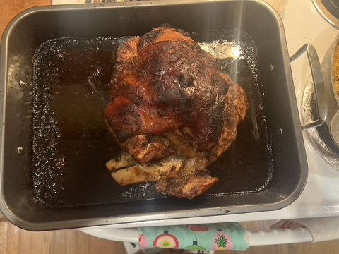

Pernil

Ingredients

- 2 tsp Fresh Thyme
- 1 Orange
- 1 ½ - 2 heads of Fresh Garlic
- ¼ - ½ cup of white vinegar
- 3 cups of water
- ¼ cup olive oil
- 1-2 Limes
- 1 Sopita aka Chicken Bouillon Cube
- 1 Red Onion
- ½ tsp Cumin
- 1 tsp Black Pepper
- 3 ½ tbs Salt for a 7lbs Pernil
- 1 tbs Dominican Oregano *Regular oregano will also work

Method:
-
Poke holes all over the pernil using a cross method to get small to
medium holes
-
Then place in a large mixing bowl and add 1 cup of water and the vinegar
-
Massage the vinegar and water into the pork and let it sit for 5-10
while you mix the marinade
-
Combine garlic, oregano, salt, sopita, cumin, onion, black pepper, and
thyme in a food processor and blend
-
Then add the freshly squeezed orange juice, lime juice, and olive oil.
Mix again and set marinade aside
- Drain the pernil
-
Season pernil thoroughly using the marinade. Be sure to massage the
marinade into the holes we made earlier. It looks weird at first, but
your taste buds will thank you later
-
Cover pernil with saran wrap and let it marinade for a minimum of 4
hours. Best to marinade for a whole day.
-
Switch Pork—skin side up—to a sturdy pan and roast covered for 3 hours
at 350 degrees making sure to baste it every hour. The pernil will
become light golden brown and juicy during this time.
-
At the 4th hour, take out 50% of the juices and roast uncovered for one
more hour
-
**Optional** Once the pernil is done, broil for 5 minutes to get super
crispy skin